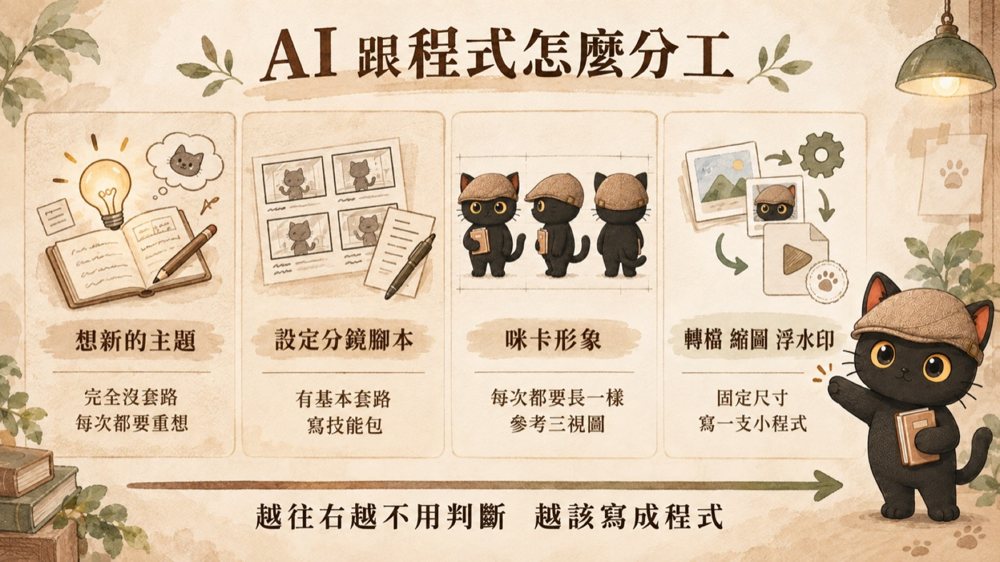
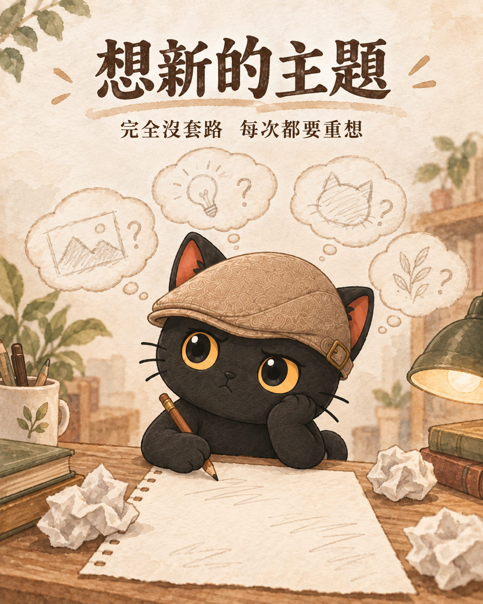
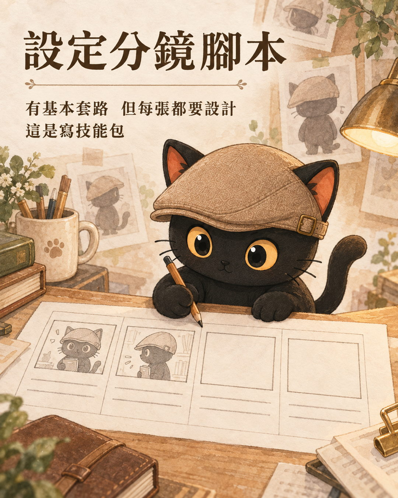
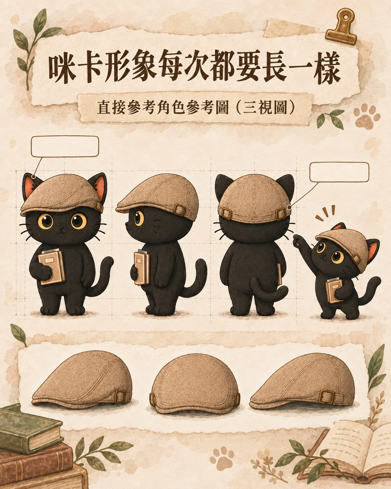
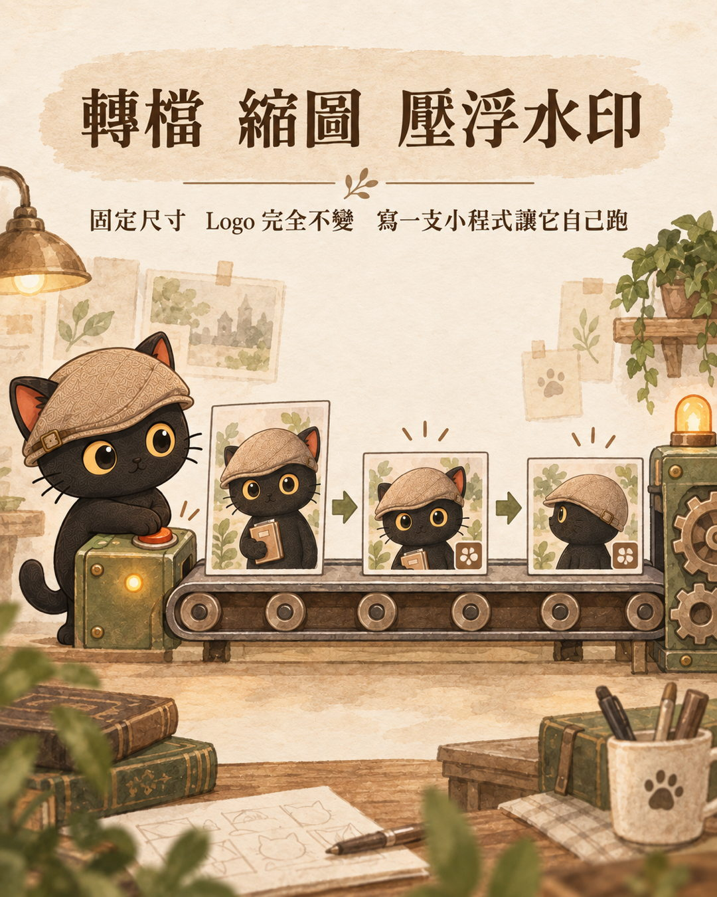

這篇在講什麼
這一段該交給 AI，還是寫成一支程式？重複的知識勞動我交給 AI，但有些時候它會變成一模一樣的操作步驟，那一段我就叫 AI 寫成程式。我用自己創作圖文的四個步驟當例子，把它拆成四種情境：完全沒套路、有基本套路但每次還要設計、成品每次都要長一樣、完全不變。四種情境各有各的處理方式，判準是變動程度，不是難度。
- 已經在用 AI 做重複的事，但每次都要重講一遍，越用越慢也越貴的人
- 想把流程自動化，卻不知道哪一段該寫成程式、哪一段不該的人
- 自己不寫程式，但要決定「這件事要不要請人做成工具」的人
- 一條從「完全沒套路」到「完全不變」的軸，可以拿去把自己的流程逐段分類
- 四種情境各自的處理方式：每次重想、寫技能包、給參考檔、寫成小程式
- 兩種放錯位置的後果，加上三個「先別寫程式」的邊界

我的判斷：變成重複的操作步驟，那一段才該自動化
我的起點很單純。重複性的知識勞動交給 AI 處理，但處理到變成重複性的操作步驟，那就叫 AI 寫成程式。這樣更快、更省、更穩、更方便。
問題是「變成固定步驟」這句話，在真的做事的時候沒有那麼好認。一條流程跑下來，每一段的固定程度都不一樣，不是整條一起判斷。所以我把它拆開。
先把你手上那一段放進決策樹
最多兩題就會走到終點。一次放一個步驟進來會比較準，因為四種情境常常同時出現在同一條流程裡，整條一起判斷會分不出來。
圖比螢幕寬，可以左右滑動看完整棵樹。
文字版：先問「這一段中間需要判斷嗎」。
- 不需要判斷，動作每次一模一樣 → 情境四：寫成一支小程式
- 需要判斷，而且每次都要重新想 → 情境一：交給 AI 現想
- 需要判斷，有規格可以照著走，但內容每次要設計 → 情境二：寫成技能包
- 需要判斷，只要跟上一次對得上就好 → 情境三：給一份參考檔
情境一 完全沒套路：想新的主題
創作圖文的第一步是想這次要講什麼。這件事每次都要重想，沒有套路可以套。題目、角度、要從哪裡切進去，上一次的做法能借的有限。

這一段留給 AI 現想就好，不要急著替它寫規格。這時候寫規格，等於把還沒定型的做法先鎖死。
情境二 有套路但每張還要設計：分鏡腳本
主題定了之後要設定分鏡腳本，決定每一張圖畫什麼、字怎麼下。這一段有基本套路：尺寸、檔案大小、風格、一組要幾張，這些每次都一樣。但每一張畫面還是要重新設計。

固定的那一半寫成技能包，也就是給 AI 的一份規格書；每張要畫什麼，交給 AI 在規格裡面判斷。技能包固定的是規格，執行還是 AI 在做，所以這一段仍然算在 AI 那側，不是程式那側。
- Claude Skills 是什麼？把你的專業流程，變成 AI 能重複執行的知識資產
這一段只講「什麼時候該把一段流程寫成技能包」，那篇講技能包本身是什麼、怎麼做、怎麼備份。
情境三 成品要長一樣：角色參考圖
咪卡是我的品牌角色形象，每一次出現都要長一樣。帽子、內耳的顏色、眼睛的形狀，這些不能每次隨機。

這一段的處理方式是準備一份角色參考圖，讓 AI 每次生之前先對一次。要固定的是成品長什麼樣子，不是中間的操作步驟。長相這件事用文字描述很難描述得準，給一張圖讓它對照，比寫一串規則有機會對上。情境三和情境四的分界就在這裡。
情境四 完全不變：轉檔、縮圖、壓浮水印
圖生出來之後還有最後一段：轉檔、縮圖、把 Logo 浮水印壓在固定的角落。尺寸是固定的，Logo 也完全不變，位置每次都一樣。

這種寫一支小程式讓它自己跑就好。更快、更省、更穩、更方便。這一段每次叫 AI 重跑，慢、貴，而且不穩定，因為它每次都有機會做得不太一樣。
我自己知識庫裡已經在跑這條路線的東西也是這樣長出來的：safe-trash（刪檔一律搬到回收資料夾）、safe-deploy（部署前固定跑那幾道檢查）、技能包路由的索引產生器、切換登記簿。它們原本都是 AI 每次都要重做一次的檢查，現在變成腳本加上自動觸發。
- 所謂的 AI 自動化，到底是 AI 在跑還是程式在跑？
那篇把自動化分成「建立」和「執行」兩段：Agent 幫你把流程建起來，建好之後程式自己跑。這一段是往下一層，分的是同一條流程裡面的四段。
兩種放錯的方式，後果不一樣
等於把沒定型的做法鎖死。之後每改一次做法就要改一次程式，原本想省的時間，變成花在維護上。
白花錢又不穩。同樣的動作每次重新判斷一遍，除了慢跟貴，還多了一個它這次做得不太一樣的風險。
三個先別寫程式的邊界
下面三條不是我原本的判斷，是我跟 AI 討論這個框架的時候補出來的判斷條件。我把它們標出來，是因為這樣你才分得出哪些是我實際做過的、哪些是後來補的推論。
一、步驟穩定才寫，會變的先別寫
判準是連續做幾次，做法幾乎沒有動過。沒到這個程度就先留給 AI，讓它多跑幾輪，固定的部分自己會浮出來。
二、只固化機械層，判斷層留給 AI
程式適合做的是格式明確、低風險可逆、錯了可以被機器驗出來的那一段。語氣、取捨、要不要做、做到什麼程度，寫死會出事。實務上最好的形狀是程式當殼，AI 在裡面做判斷。
三、程式有維護成本，次數不夠就別寫
一次性的事寫成程式比手做貴。而且程式一旦寫了就進入要維護的清單，環境變了會壞，而且常常是靜默地壞，等你發現的時候已經錯了一陣子。
- AI 一直停下來要授權，怎麼讓它順順跑完？
這一段只講「哪一段該寫成程式」，那篇講的是自動跑起來之後，怎麼讓錯誤不會一路滾大。
四種情境裡，中間那兩層不能跳過
從人腦直接跳到寫程式，通常會把還在變的東西寫死。要先讓 AI 做過幾輪，你才知道哪些步驟真的固定、哪些是每次都要重想的。
中間那兩層（寫技能包、給參考檔）不只是過渡，它們本身就是產物：技能包是你的規格，參考檔是你的標準。就算最後那一段永遠不寫成程式，這兩樣東西也已經把重複的成本降下來了。
四種情境一張表看完
| 情境 | 創作圖文的例子 | 怎麼處理 | 誰在做判斷 |
|---|---|---|---|
| 完全沒套路 | 想新的主題 | 每次都要重想 | AI |
| 有基本套路，但每張還是要設計 | 設定分鏡腳本 | 寫技能包 | AI，在你給的規格裡 |
| 成品要長一樣 | 咪卡是品牌角色形象，每次都要長一樣 | 直接參考角色參考圖（三視圖） | AI，照著參考檔對 |
| 完全不變 | 轉檔、縮圖、Logo 浮水印壓在固定角落，固定尺寸 | 寫一支小程式讓它自己跑 | 沒有人在判斷 |
最後一欄是這張表真正的重點。越往右越不用判斷，越該寫成程式。
今天可以做的第一步：把流程逐段標一次
可以挑一條你最近重複跑過幾次的流程，把它逐段列出來，每一段只問一句：這一段中間需要判斷嗎？
標完通常會看到兩件事。一是最後一兩段其實早就可以寫成程式了，只是一直沒動手；二是中間有一段你以為固定、其實每次都在改，那一段可以先留著。
這段可以直接貼給你的 AI
自己分不出來也沒關係，把下面整段複製貼給你的 AI，讓它照這四種情境幫你分。你不需要先看懂它。
這篇提到過的
- 所謂的 AI 自動化，到底是 AI 在跑還是程式在跑？：把自動化拆成建立與執行兩段。
- Claude Skills 是什麼？：情境二用到的技能包，本身怎麼做。
- AI 一直停下來要授權，怎麼讓它順順跑完？：跑起來之後怎麼設護欄。
再往前後延伸
- 同樣的事，每次都要重新跟 AI 交代一遍？：這篇談的是「哪一段該寫成程式」，那篇談的是還留在 AI 手上的那些段，怎麼用規則讓它每次照你的方法做。
- 現在還需要學寫程式嗎？：不寫程式的人要怎麼設計自己的 Agent 框架，這篇的第四種情境要不要自己動手，可以接著那篇一起看。
想把自己的流程逐段分一次
我每個月開兩場免費線上講座，講的就是怎麼把重複的工作整理成 AI 接得住、能重複跑的流程。有想問的流程可以直接帶來問。
每個月兩場，線上進行。